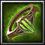

Ispion, the Runed Ring
[Ring]
+1410 Strength
+580 Agility
+580 Intelligence
+12% Damage Reduction
+160 Movement Speed
Passive: Increase nearby allies magic defense by 8% and healing received by 12%.
Active: "Rune Field" Heal allies for 6000 and yourself for 12000 health every 1.5 seconds in 500 AoE for 7.5 seconds. (50 second CD)
Knight Specialty: Improved Seal of Mana (T) Radius increased by 50% and duration is increased by 2 seconds.